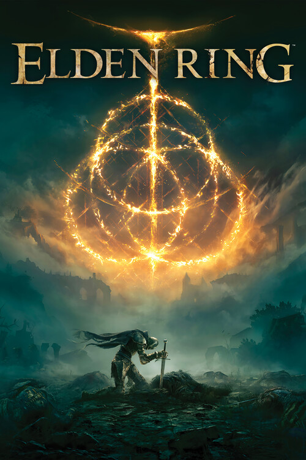

Elden Ring
Rise, Tarnished, and be guided by grace

The Lands Between
Elden Ring is an expansive, dark fantasy action role-playing game developed by FromSoftware and published by Bandai Namco Entertainment. Directed by Hidetaka Miyazaki with worldbuilding provided by fantasy author George R. R. Martin, the game beckons players to the ruined, beautiful world of the Lands Between to claim the title of Elden Lord.
Path of Grace
- A Vast Open World: Seamlessly explore a breathtaking world featuring sweeping landscapes, claustrophobic legacy dungeons, and hidden secrets waiting to be uncovered on foot or atop your spectral steed, Torrent.
- Punishing Yet Rewarding Combat: Master a deep array of weapons, magical abilities, and skills found throughout the world. Approach combat creatively using stealth, summoning spirit ashes, or engaging in brutal melee encounters.
- Rich Mythos: Unravel the shattered history of the Elden Ring and the demigods who possess its shards. The intricate lore weaves a story of ambition, betrayal, and divine grace.
- Limitless Freedom: Customize your character extensively. From your appearance to your playstyle, the game allows for a highly personalized approach to overcoming the insurmountable odds ahead.
Game Archives
- Platforms: PlayStation 4, PlayStation 5, Windows, Xbox One, Xbox Series X/S
- Release Date: February 25, 2022
- Developer: FromSoftware
- Publisher: Bandai Namco Entertainment
- Genre: Action RPG, Open World